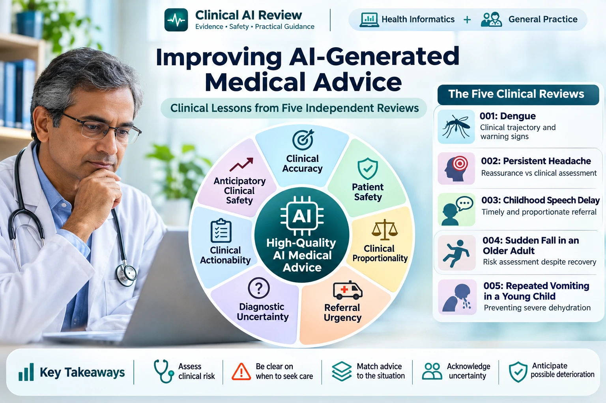

Improving AI-Generated Medical Advice: Clinical Lessons from Five Independent Reviews
An integrated General Practice and Health Informatics perspective on clinical accuracy, patient safety, referral urgency and the quality of AI-generated medical advice.
5 clinical scenarios23 AI responses7 proposed quality dimensions
Read scientific synthesis